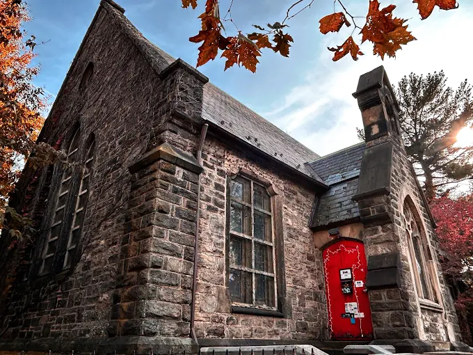
Music Hall
Bronx Academy of Arts and Dance (BAAD!)
Public multidisciplinary arts venue presenting formal dance,
music, and performance rooted in fine-arts traditions.

Music Hall
Bronx Music Heritage Center
Cultural performance space with curated concerts and music
presentations tied to artistic and historical traditions.
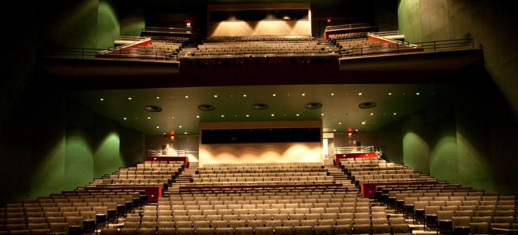
Music Hall
Hostos Center for the Arts & Culture
Major public arts center presenting classical concerts,
opera-adjacent works, ballet, and international fine arts.
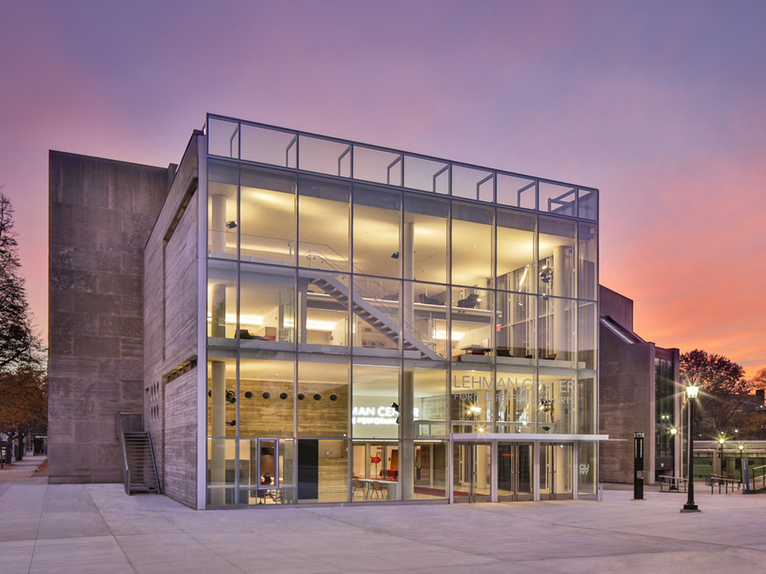
Music Hall
Lehman Center for the Performing Arts
Large public concert hall featuring orchestras, ballet companies,
classical soloists, and opera-adjacent performances.
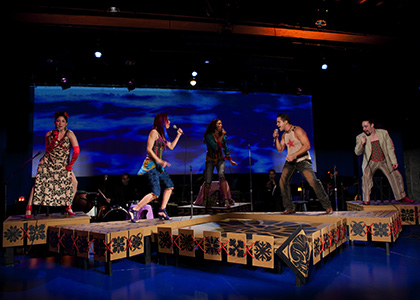
Music Hall
Pregones / Puerto Rican Traveling Theater
Professional performing arts institution offering publicly
ticketed music-driven and theatrical fine-arts works.
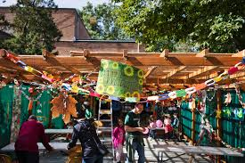
Music Hall
Riverdale Temple Cultural Arts Series
Community cultural venue hosting public classical music, chamber
performances, and recital-style concerts.
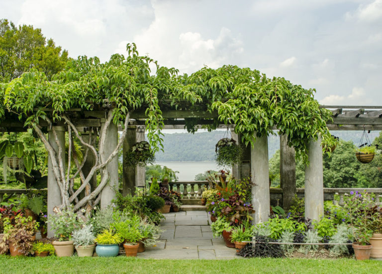
Music Hall
Wave Hill – Armor Hall
Elegant cultural hall offering public chamber music, classical
recitals, and interdisciplinary fine-arts events.
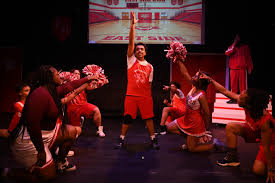
Theatre
Open Hydrant Theater Company
The first professional AEA ensemble theater company in the South
Bronx, presenting innovative classics and new works with a focus
on diversity, empowerment, and youth engagement.
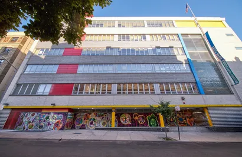
Theatre
Casita Maria Center for Arts & Education
Historic South Bronx arts and education center founded in 1934,
featuring performance spaces, a gallery, and dance and music
studios — with free after-school and youth programs rooted in
Latin culture.

Theatre
City Island Theater Group (CITG)
Community theater on City Island producing live performances for
audiences of all ages since 1999, including musicals, dramas, and
free outdoor Shakespeare productions.
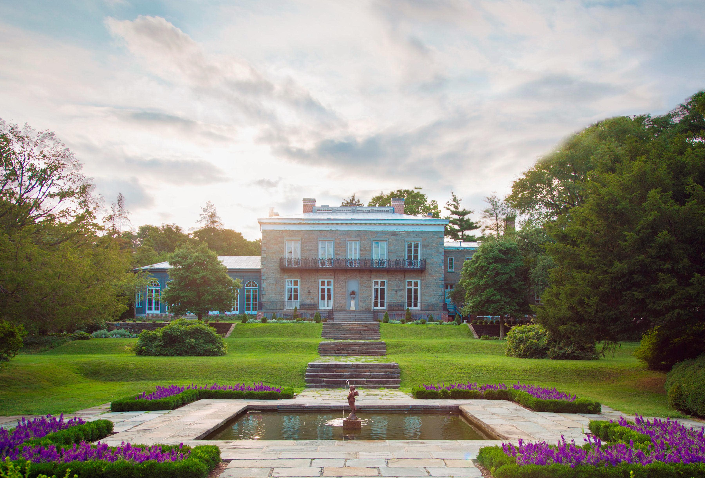
Museum
Bartow-Pell Mansion Museum
Historic 19th-century mansion and carriage house set within Pelham
Bay Park, offering guided tours of period rooms and grounds that
illuminate the history of New York's early elite.
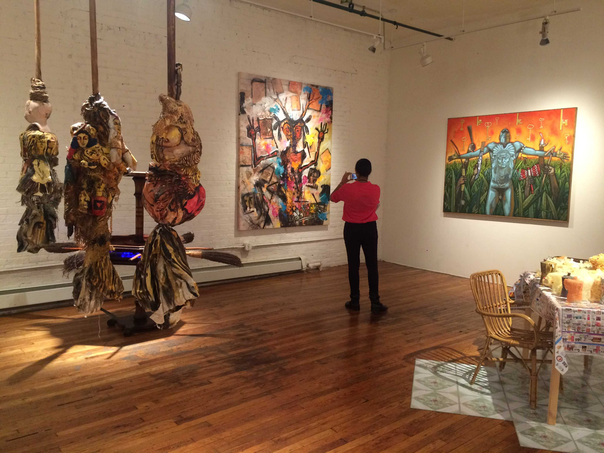
Museum
BronxArtSpace
Contemporary gallery space in the South Bronx presenting rotating
exhibitions by local and emerging artists, with a focus on
community-rooted visual art and creative expression.
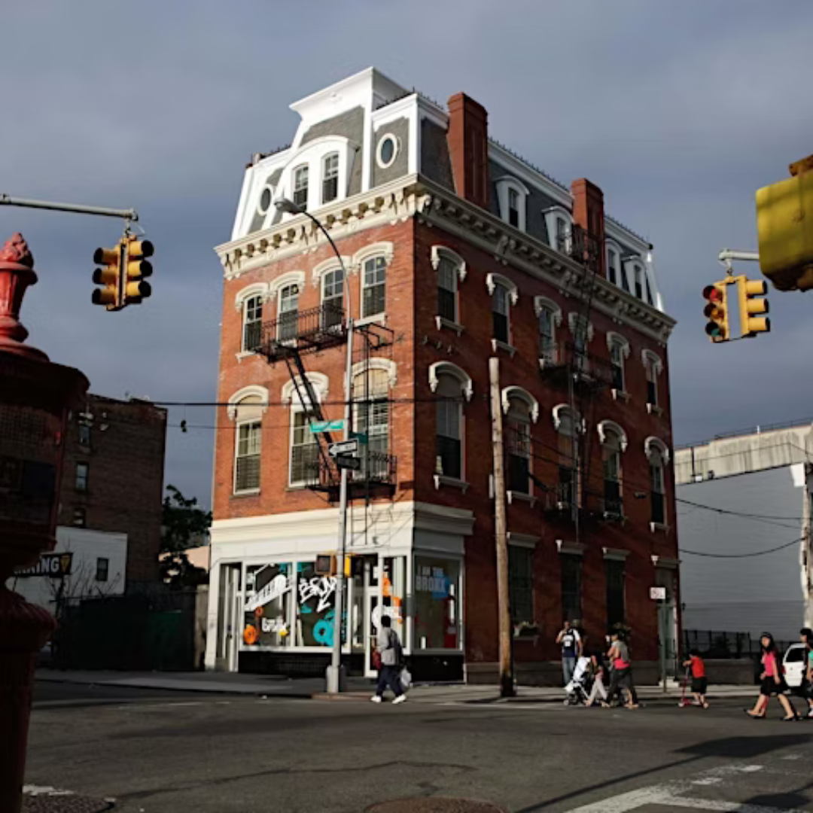
Museum
Bronx Documentary Center
Gallery and education center dedicated to documentary photography
and film, presenting socially engaged exhibitions and youth media
programs that amplify underrepresented stories.
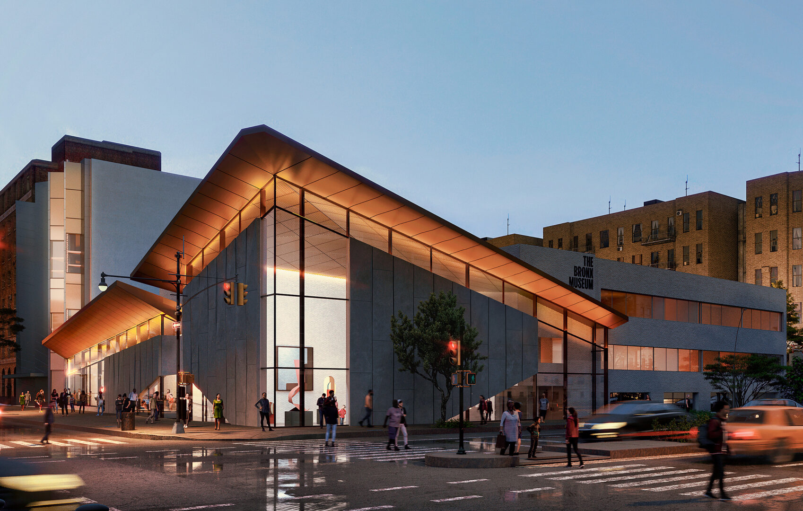
Museum
The Bronx Museum of the Arts
Free admission contemporary art museum on the Grand Concourse
presenting exhibitions by artists of African, Asian, and Latin
American descent, with robust school group and education programs.
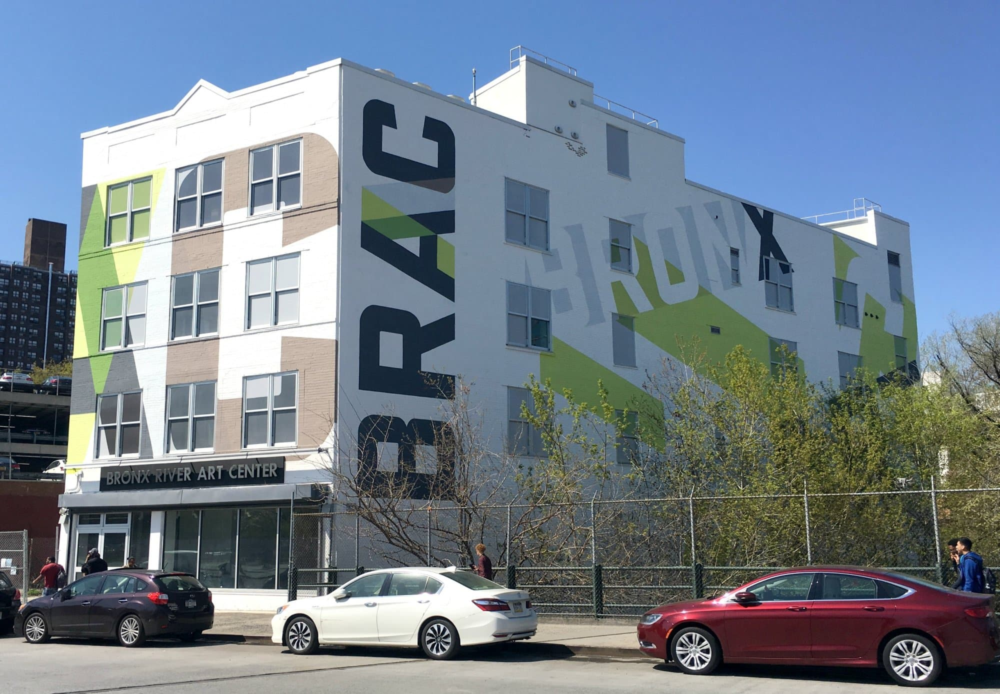
Museum
Bronx River Art Center
Community arts center along the Bronx River offering gallery
exhibitions, youth art workshops, and after-school programming
with a mission rooted in environmental and cultural stewardship.
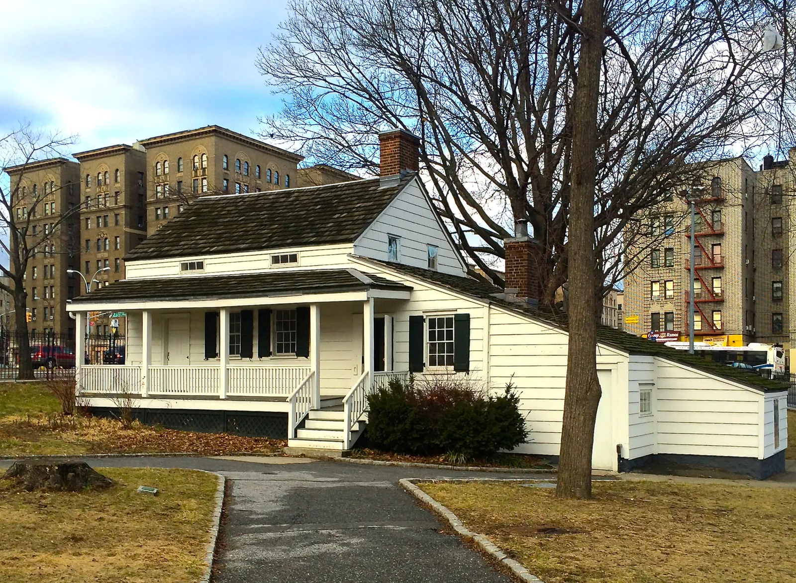
Museum
Edgar Allan Poe Cottage
Historic cottage where Poe lived from 1846 to 1849, now a museum
operated by the Bronx Historical Society offering guided tours and
educational programs tied to literature and 19th-century New York.

Museum
Museum of Bronx History
Local history museum operated by the Bronx Historical Society
inside the Valentine-Varian House, exploring the social, cultural,
and political history of the Bronx from colonial times to today.
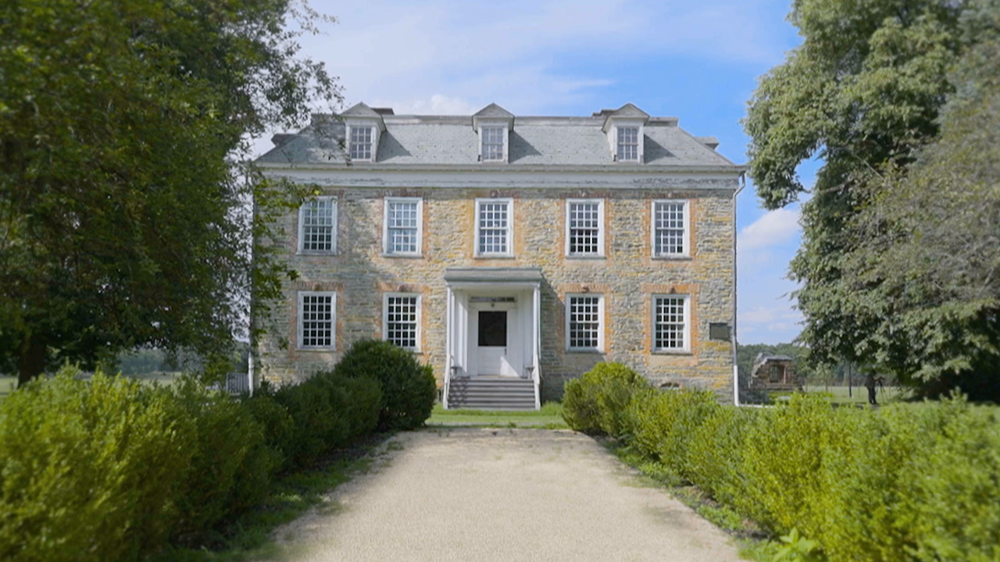
Museum
Van Cortlandt House Museum
New York City's oldest surviving house, built in 1748, offering
guided tours of restored colonial-era rooms and educational
programs focused on early American history and life in the Hudson
Valley.